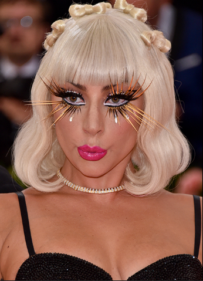
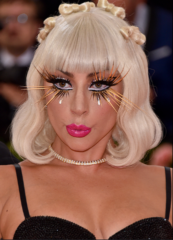

A short tribute to honor her contributions to music, fashion, and philanthropy
A short tribute to honor her contributions to music, fashion, and philanthropy
Stefani Joanne Angelina Germanotta, known professionally as Lady Gaga, is an American singer, songwriter, and actress. Born on March 28, 1986, in New York City, she rose to fame with her debut album The Fame (2008), which included hit singles like "Just Dance" and "Poker Face". Known for her bold fashion choices, theatrical performances, and powerful vocals, Gaga has continuously pushed creative boundaries in the music industry
Beyond music, she is an advocate for mental health, LGBTQ+ rights, and social activism. Her Born This Way Foundation focuses on youth empowerment and mental wellness. She has also ventured into acting, earning an Academy Award nomination for her role in A Star Is Born (2018) .